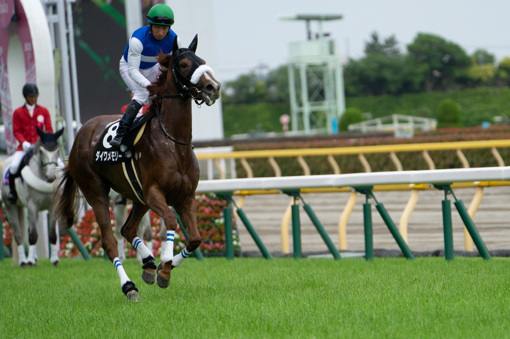

Seis cuerpos para Come What May, hermano entero de Desert Crown, en el Trigo Stakes
Come What May, de Aidan O'Brien y montado por Wayne Lordan, se impuso por seis cuerpos en el Trigo Stakes (Listed) de Leopardstown en apenas su segunda salida a pista.

Wayne Lordan no esperó a nadie. Colocó a Come What May en posiciones delanteras desde el partidor y, a falta de dos furlongs, el potro de tres años se marchó. En la llegada le sacó seis cuerpos a Diego El Queso, castrado de cuatro años preparado por Ger Lyons. Snellen, yegua de cinco años de Gavin Cromwell, fue tercera a medio cuerpo del segundo.
El hijo de Nathaniel y Desert Berry, por Green Desert, salió como favorito a 4-6. Cubrió la milla y cuarto, con terreno bueno, en 2:09.40. Ante nueve participantes, logró su primera victoria con letra negra.
Suma dos carreras y dos triunfos. El mes pasado había ganado su debut en The Curragh sobre la misma distancia. Corre a nombre de Michael Tabor, Derrick Smith, Mrs John Magnier y Westerberg, y es criado por Coolmore. Se embolsó 30.000 euros de una dotación de 50.000.
Chris Armstrong, asistente de O'Brien, explicó tras la carrera: "Es un caballo grande y Aidan le dio todo el tiempo que necesitaba para hacerse. El primer día en The Curragh fue tremendamente impresionante, pero creo que aquí lo ha sido todavía más". Y añadió: "Venir con una sola carrera y hacer esto ante caballos con mucha experiencia y una forma sólida es impresionante de verdad".
El futuro inmediato está por decidir. "Agradecerá incluso subir de distancia otra vez. Está inscrito en la venta de caballos en entrenamiento, pero en la próxima semana se decidirá si lo retiran y lo mantienen para el año que viene. Diría que es un caballo con una capacidad por encima de la media", señaló Armstrong.
Come What May es el noveno producto de Desert Berry, la madre de Desert Crown, ganador del Derby. También dio a Archie McKellar, ganador de Grupo III. La familia Juddmonte de la yegua incluye a los ganadores de Grupo I Byword, Proviso y Wandesta. Su potro de dos años por Frankel fue adquirido por 550.000 euros por Resolute Bloodstock en la Goffs Orby Book 1 del año pasado. La yegua tiene además una potranca lechal del mismo semental.
Por Martín Larrañeta